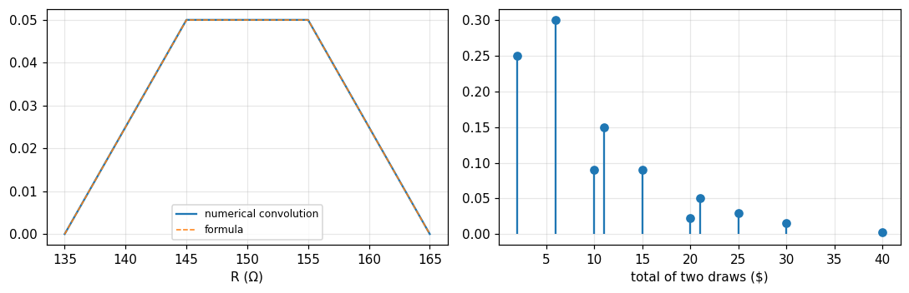
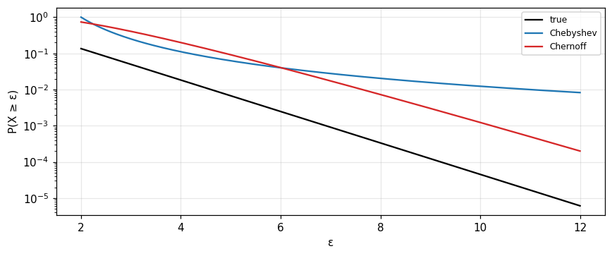

Probability, random variables and the characteristic function
From sets and probability, random variables and moments (Barkat) to the distribution of a sum as a convolution, the characteristic function as the Fourier transform of a density, the exponential and Poisson distributions and the central limit (Bracewell).
Lecture (slides) Hands-on with the Jupyter Notebook Self-check quiz
Lecture (slides)
Probability, random variables and the characteristic function
- Use sets, counting, conditional probability and Bayes' rule to compute the probability of events.
- Describe discrete, continuous and mixed random variables by CDF and PDF (with impulses) and compute expectation, variance and moments.
- See that the density of the sum of two independent variables is a convolution, deduce that means and variances add, and handle products, quotients, max, min and functions of one variable.
- Use the characteristic function (the Fourier transform of the density) to obtain moments, add independent variables and explain the central limit; use Chebyshev, Chernoff and the law of large numbers.
- Recognise the truncated exponential, gamma (Pearson III) and Poisson distributions from convolutions, and work with two-dimensional random variables, correlation, and independence versus uncorrelatedness.
Use the buttons, the dots or the ← → keys to move between slides.
Sets and probability
- Sets, Venn diagrams and laws
- Axioms of probability and counting
- Conditional probability, independence and Bayes' rule
Why probability comes before signal detection
Barkat's book is designed for the study of statistical signal detection and parameter estimation; these concepts require a good knowledge of probability, random variables and stochastic processes. Chapter 1 starts from set theory since it provides the most fundamental concepts of probability (Barkat, section 1.1, p. 1). Bracewell arrives at the same subject from the other side: countless applications of Fourier transforms in statistics trace to one convolution relation (chapter 16, p. 427).
Sets: the basic definitions
A set is a collection of objects called elements; we write a\in A. It can be described by listing, in words, or as A=\{a\mid a\text{ integer},1\le a\le6\}. A set is countable if its elements can be put in one-to-one correspondence with 1,2,3,\ldots. The universal set U contains all elements under consideration, the empty set \emptyset none. B\subseteq A if every element of B is in A; two sets with no common element are disjoint or mutually exclusive (Barkat, section 1.2.1, pp. 1 to 3). If U has n elements there are 2^n subsets: for a die, 2^6= 64.
Operations and laws
| Operation | Notation | Meaning |
|---|---|---|
| Union | A\cup B | in A or B or both |
| Intersection | A\cap B | in both A and B |
| Difference | A-B | in A not in B |
| Complement | \bar A | in U not in A |
| Cartesian product | A\times B | ordered pairs (a,b) |
Laws: commutative, associative, distributive; A\cup\bar A=U, A\cap\bar A=\emptyset; and De Morgan \overline{A\cup B}=\bar A\cap\bar B (Barkat, pp. 3 to 6).
Sample space and events
Probability theory was developed to model games of chance such as rolling a die, spinning a roulette wheel or dealing cards; later it modelled physical experiments. The set of all distinct possible outcomes is the sample space S; an event is an outcome or combination of outcomes, i.e. a subset of S (Barkat, section 1.2.3, p. 6). With two dice |S|=36; A=\{sum is 7\} has 6 elements, B=\{one even one odd\} has 18: P(A) = 0.1667, P(B) = 0.5, P(A\cap B) = 0.1667 (since A\subset B), P(\bar A) = 0.8333 (pp. 7 to 8).
Three definitions of probability
- Classical: N mutually exclusive equally likely outcomes; P(A)=N_A/N.
- Relative frequency: P(A)=\lim_{n\to\infty}n_A/n; no need for equal likelihood, but in practice n is finite.
- Subjective: the degree of confidence in an outcome (De Finetti).
Barkat states three definitions (pp. 6 to 7). Measured: throwing two dice 200,000 times, the frequency of a sum of 7 is 0.166, near 1/6 = 0.1667.
The formal definition and properties
A probability function P(\cdot) assigns to an event A a real number such that: (1) P(A)\ge0; (2) P(S)=1; (3) for countable mutually exclusive events, P(A_1\cup\cdots\cup A_n)=\sum P(A_i) (p. 7). From these: 0\le P(A)\le1, P(\emptyset)=0, P(\bar A)=1-P(A) and P(A\cup B)=P(A)+P(B)-P(A\cap B) (pp. 12 to 13). Check by counting: with two dice P(A\cup B) = 0.5 =\tfrac12+\tfrac16-\tfrac16.
Counting: the product rule, permutations, combinations
If a task consists of steps with n_1,n_2,\ldots,n_k ways, the total is n_1n_2\cdots n_k: a 5-letter word with repeats is 26^5 = 11881376; without repeats 26\cdot25\cdot24\cdot23\cdot22 = 7893600 (Barkat, section 1.2.4, p. 8). Permutations of r objects in n slots: {}_nP_r=n!/(n-r)!; combinations (order irrelevant): \binom nr=n!/[(n-r)!r!]; permutations with repeated objects use the multinomial coefficient n!/(n_1!\cdots n_k!) (pp. 8 to 9). Measured: \binom{14}{6} = 3003.
Examples: a tree diagram and sampling without replacement
Urn A has 5 red and 2 white balls, urn B has 3 red and 2 white; choose an urn at random then draw two balls in succession without replacement. P(2\text{ white})=\tfrac12\cdot\tfrac27\cdot\tfrac16+\tfrac12\cdot\tfrac25\cdot\tfrac14 = 0.0738 (Barkat, example 1.3, pp. 9 to 10), by exact fractions and by simulation. Example 1.4: an urn with 5 red, 3 green, 4 blue, 2 white balls, draw 6: the probability of 2 red, 1 green, 2 blue, 1 white is \binom52\binom31\binom42\binom21/\binom{14}6 = 0.1199 by exact counting and simulation. (The book's printed value is 0.080; direct counting gives 360/3003, so we use the computed value.)
Conditional probability and independence
P(A\mid B)=P(A\cap B)/P(B); if B has no effect on A they are independent: P(A\cap B)=P(A)P(B) (Barkat, p. 13). For three events both pairwise independence and P(A_1\cap A_2\cap A_3)=P(A_1)P(A_2)P(A_3) must hold (p. 13). Example 1.7: a box with 7 white, 3 red, 6 green balls; draw red, white, green in order: with replacement the events are independent, \tfrac3{16}\cdot\tfrac7{16}\cdot\tfrac68 = 0.0308; without replacement \tfrac3{16}\cdot\tfrac7{15}\cdot\tfrac6{14} = 0.0375 (pp. 14 to 15).
Bayes' rule and total probability
If A_1,\ldots,A_n are mutually exclusive and their union is S then for every event A: P(A)=\sum P(A\mid A_i)P(A_i) (total probability) and P(A_k\mid A)=P(A_k)P(A\mid A_k)/P(A) (Bayes) (Barkat, pp. 13 to 14). Example 1.6: a source sends 0 with probability 0.6 and 1 with 0.4, the channel garbles a symbol with probability 0.2: P(\text{receive }0)=0.8\cdot0.6+0.2\cdot0.4 = 0.56; and P(\text{sent }0\mid\text{received }0) = 0.8571 (p. 14). Example 1.8 (three urns, 32 balls): P(\text{white}) = 0.2217 and P(\text{urn B}\mid\text{white}) = 0.6015 (pp. 15 to 17).
Debunking: independent is not mutually exclusive
Two events with positive probability that are mutually exclusive are not independent, since P(A\cap B)=0\ne P(A)P(B). Measured: A=\{sum 7\} and B=\{first die is 1\} overlap and P(A\cap B) = 0.0278 equals P(A)P(B) = 0.0278: independent though not exclusive; while C=\{sum 2\} and D=\{sum 12\} are exclusive, P(C\cap D) = 0 but P(C)P(D) = 0.00077: not independent.
Self-check, part 1
- Why does P(A\cap B)=P(A)P(B) hold only under independence?
- How many subsets does a 6-element set have?
- Why does drawing without replacement destroy independence?
Hints: it is the definition of independence; 64; the sample space changes after each draw.
Random variables and moments
- Discrete, continuous and mixed variables
- Expectation, variance and moments
- Frequency distributions and the notation P(x)\,dx
A random variable: a function
A random variable is a real function mapping the elements of the sample space S to points of the real axis. It is neither random nor a variable but a function, so the name is a little misleading. Capital letters X,Y,Z denote variables and lowercase x,y,z particular values (Barkat, section 1.3, p. 17). Bracewell uses the term frequency distribution: the probability that a quantity takes values between x and x+dx is P(x)\,dx, dimensionless; if dx has dimensions then P(x) has the reciprocal dimensions (chapter 16, p. 427).
Step and impulse functions: a common tool
The unit step u(x) equals 1 for x\ge0 and 0 for x<0. The unit impulse \delta(x) is the limit of a rectangular pulse of unit area as its width goes to 0; the integral of the impulse is the step, the derivative of the step is the impulse, and \int A\delta(x-x_0)f(x)dx=Af(x_0) (Barkat, section 1.3.1, pp. 17 to 18). This is the sifting property of Bracewell (module 5). We will use \delta to write the density of a discrete variable.
Discrete variables: probabilities and the CDF
A discrete variable takes only a finite or countable set of values x_i with P(x_i)\ge0 and \sum P(x_i)=1. The cumulative distribution function is F_X(x)=P(X\le x), and the density is f_X(x)=\sum P(x_i)\delta(x-x_i) (Barkat, section 1.3.2, pp. 18 to 19). Example 1.9: X is the sum of two dice: P(4\le X\le6) = 0.3333 and P(X\ge5) = 0.8333 (pp. 19 to 20). The density is \frac1{36}[\delta(x-2)+2\delta(x-3)+\cdots+\delta(x-12)]: the convolution of two uniform densities, which returns in part 3.
Continuous variables: the density
A continuous variable has F_X(x)=\int_{-\infty}^xf_X(u)du with f_X\ge0 and \int f_X=1; conversely f_X=dF_X/dx (Barkat, section 1.3.3, pp. 20 to 22). Example 1.10: f_X=cx on 0<x<3: c=2/9 = 0.2222; P(1<X<2) = 0.3333; and F_X(x)=x^2/9 on [0,3], equal to 0.4444 at x=2. Each number is computed by numerical integration and by formula.
Mixed variables: the half-wave rectifier
A mixed variable has a density with both impulses (probabilities at discrete points) and a continuous part. Example: an input X with a symmetric density through an ideal half-wave rectifier Y=X for X>0, Y=0 for X\le0: P(Y=0)=\tfrac12 (an impulse of strength \tfrac12 at 0) and a continuous part of area \tfrac12 equal to the density of X for y>0 (Barkat, section 1.3.4, pp. 22 to 23). Measured with a normal X: P(Y=0) = 0.5, E[Y] = 0.3989 and \text{var}\,Y = 0.3408, by integration and by simulation.
Expectation
The expectation (mean) of a discrete variable is E[X]=\sum xP(x); of a continuous one E[X]=\int xf_X(x)dx. For a function g(X): E[g(X)]=\int g(x)f_X(x)dx (an important theorem used throughout the book), and E[cX]=cE[X] (Barkat, section 1.4.1, pp. 23 to 25). Example 1.11: one die: E[X] = 3.5. Example 1.12: an even density (1/4 on |x|<1 and 1/8 on 1<|x|<3): E[X] = 0.
Moments, mean-square and variance
E[X^n] is the nth moment about the origin; E[X^2] is the mean-square value. The variance is \sigma_x^2=E[(X-E[X])^2]=E[X^2]-(E[X])^2 and \sigma_x is the standard deviation (Barkat, pp. 25 to 26). Example 1.13: for the density of example 1.12, E[X^2]=\sigma_x^2 = 2.3333 =7/3. These are exactly what Bracewell calls the moment, centroid and variance of a function (module 8): a probability density is simply a function of area 1. Measured: two dice have E = 7 and variance 5.8333 =35/6.
Self-check, part 2
- How do we write the density of a discrete variable with impulses?
- How does a mixed variable differ from a continuous one in its density?
- What is \text{var}\,X in terms of E[X^2] and E[X]?
Hints: \sum P(x_i)\delta(x-x_i); it contains impulses; E[X^2]-(E[X])^2.
Distribution of a sum, product, max and min: convolution
- Series resistors and a barrel of money
- Consequence: means and variances add
- Products, quotients, max, min and functions of one variable
The resistor problem
Buying many 100-ohm resistors with a 10 percent tolerance gives values from 90 to 110, roughly uniform: density P_1(R)=\frac1{20}\Pi\!\left(\frac{R-100}{20}\right). Similarly for 50-ohm resistors: P_2(R)=\frac1{10}\Pi\!\left(\frac{R-50}{10}\right). We need the tolerance of the series combination, i.e. the distribution P(R) between 135 and 165 ohms (Bracewell, pp. 429 to 430).
The argument leading to convolution
Let the resistor from the 100-ohm stock be R'; for the total to be R the resistor from the 50-ohm stock must be R-R'. The frequency of a total R is the product of the frequencies of R' in the first component and R-R' in the second, integrated over the possibilities of R': P(R)=\int P_1(R')P_2(R-R')dR', i.e. P=P_1*P_2 (Bracewell, p. 430). We may use infinite limits since P_1 is zero outside [90,110]. This is the basic convolution relation between the distribution of a sum and the distributions of its components.
The result: a trapezoid
The convolution gives a trapezoidal distribution (Fig. 16.1) from 135 to 165 ohms, with a flat top of height 0.05 between 145 and 155, exactly what scanning a uniform stripe 20 units wide with a slit 10 units wide would give (the three phases last 10 units each), or a rectangular pulse of 20 into a filter with a rectangular impulse response of 10 (p. 430). Measured: at R=140 the density is 0.025; the mean is 150 ohms. A numerical convolution on a grid and the piecewise formula give the same result.

Checks with the convolution theorems
Centroids add: the mean of the combination equals the sum of the means. Areas multiply: two distributions of area 1 give area 1. Variances add: \sigma^2=20^2/12+10^2/12 = 41.667, standard deviation 6.455 ohms, i.e. 4.3 percent of 150 against 5.77 percent for each component. The tolerance (by standard deviation) is improved, but the spread between extremes is still 10 percent (pp. 430 to 431). With more elements in series or rounder distributions the Gaussian result of the central-limit theorem would be approached more closely.
Second example: a barrel of money
A barrel full of money, half dollar bills, the rest fives, tens and a few twenties. The frequency of n-dollar bills is proportional to the sequence \{10,6,3,1\} at \{1,5,10,20\} (sum 20), i.e. P_1(x)=\tfrac{10}{20}\delta(x-1)+\tfrac6{20}\delta(x-5)+\tfrac3{20}\delta(x-10)+\tfrac1{20}\delta(x-20). Draw two bills and add: the distribution of the total is the serial product (discrete convolution) of the sequence with itself, \{p\}=\{p_1\}*\{p_2\} (Bracewell, pp. 431 to 433). Result: \tfrac1{400}[100\delta(x-2)+120\delta(x-6)+36\delta(x-10)+60\delta(x-11)+36\delta(x-15)+9\delta(x-20)+20\delta(x-21)+12\delta(x-25)+6\delta(x-30)+\delta(x-40)].
Numbers for the barrel
The probability that two draws total 6 dollars is 120/400 = 0.3; total 11 dollars 0.15; the probabilities add to 1 (the book's numerical check). The mean of one draw is 4.5, of two 9; the variance of one draw 22.75, of two 45.5: they indeed add. Checked both by enumerating the 16 ordered pairs and by exact fractional convolution.
A warning: are the draws independent?
The convolution relation assumes the two quantities do not influence each other. If the barrel had been filled by throwing in great wads of each denomination and not thoroughly stirred the results could differ; or if there were only one twenty-dollar bill, drawing it would radically influence the second draw. Before applying convolution always consider whether the two draws are independent, i.e. whether the product rule applies (Bracewell, p. 433). Measured: with a single twenty in a barrel of 20 bills (an example), the probability of a total of 40 when drawing two without replacement is 0, not 1/400.
Consequences: means and variances add
The abscissas of centroids add under convolution, so m=m_1+m_2: the mean of the sum of two random variables is the sum of the means. Variances also add: \sigma^2=\sigma_1^2+\sigma_2^2 (Bracewell, p. 434). For three quantities P=P_1*P_2*P_3 by associativity, and it extends to any number. Barkat writes the same results for random variables: E[X+Y]=E[X]+E[Y] (always true), \text{var}[X+Y]=\text{var}X+\text{var}Y (when uncorrelated) (section 1.5.2, pp. 41 to 43).
Sum of uniforms: the general trapezoid
Barkat, example 1.20: X uniform on [0,a], Y uniform on [0,b], a<b; the density of Z=X+Y is the convolution, computed graphically: z/(ab) for 0\le z<a; 1/b for a\le z<b; (a+b-z)/(ab) for b\le z<a+b (section 1.6.2, pp. 52 to 54). With a=1, b=2: f_Z(0.5) = 0.25; f_Z(1.5) = 0.5 (the flat top); f_Z(2.5) = 0.25. This is exactly Bracewell's trapezoid; both are one convolution.
Product, quotient, maximum, minimum
For independent X,Y: U=XY has f_U(u)=\int\frac1{|x|}f_X(x)f_Y(u/x)dx; V=X/Y has f_V(v)=\int|y|f_X(vy)f_Y(y)dy; M=\max(X,Y) has F_M=F_XF_Y so f_M=F_Xf_Y+f_XF_Y; N=\min(X,Y) has f_N=f_X(1-F_Y)+f_Y(1-F_X) (Barkat, pp. 55 to 58). For X,Y uniform on (0,1): f_U(u)=-\ln u, f_U(0.2) = 1.6094, E[U] = 0.25; E[M] = 0.6667 and E[N] = 0.3333, each by integration and simulation.
A function of one variable: the fundamental theorem
If Y=g(X) is monotone and differentiable then f_Y(y)=f_X[g^{-1}(y)]\,|dg^{-1}/dy|; with several roots x_i, f_Y(y)=\sum f_X(x_i)/|g'(x_i)|; and for Y=aX+b, f_Y=\frac1{|a|}f_X\!\left(\frac{y-b}a\right) (Barkat, section 1.6.1, pp. 49 to 51). Example 1.19: Y=aX^2 has two roots \pm\sqrt{y/a}: f_Y=\frac1{2\sqrt{ay}}[f_X(\sqrt{y/a})+f_X(-\sqrt{y/a})]. Measured with a normal X, a=2: E[Y] = 2, and P(Y\le1) = 0.5205 from the density of Y and from the error function.
Self-check, part 3
- Why is the distribution of the sum of two independent variables a convolution?
- The mean and variance of the series combination 100\Omega+50\Omega?
- When must convolution not be applied to two draws?
Hints: the product P_1(x')P_2(x-x') integrated over x'; 150 and 41.67; when the draws depend on each other.
The characteristic function, the central limit and bounds
- Definition and properties
- Moments, independent sums and the central limit
- Chebyshev, Chernoff and the law of large numbers
Definition of the characteristic function
Bracewell: the characteristic function associated with a frequency distribution P(x) is \phi(t)=\int P(x)e^{ixt}dx, the plus-sign Fourier transform of the distribution (chapter 16, p. 435). Barkat: \Phi_x(\omega)=E[e^{j\omega X}]=\int f_X(x)e^{j\omega x}dx, the Fourier transform of the density, with inverse f_X(x)=\frac1{2\pi}\int e^{-j\omega x}\Phi_x(\omega)d\omega (section 1.4.2, pp. 27 to 28) [the sign of the exponent in the printed inverse depends on convention]. The two definitions are one; relation to Bracewell's usual transform: \phi(t)=F(-t/2\pi) with F(s)=\int P(x)e^{-i2\pi xs}dx.
Example: the Laplace distribution
With P(x)=\tfrac12e^{-|x|}: \phi(t)=\dfrac1{1+t^2}. Measured at t=0.5: numerical integral 0.8, exactly 1/(1+0.25); through the Bracewell relation at t=0.7: F(-0.7/2\pi) = 0.6711, equal to \phi(0.7) = 1/(1+0.49). (Barkat's example 1.14, as read from the PDF text layer, uses e^{-|x|/2} with result 4/(1+4\omega^2); that function integrates to 4, not 1, so here we use the normalised \tfrac12e^{-|x|}.)
Properties of the characteristic function
- \phi(0)=1, since \int P(x)dx=1.
- \phi(-t)=\phi^*(t) (Hermitian) since P is real: the real part even, the imaginary part odd.
- |\phi(t)|\le1.
- If P(x)=0 for x<0 the real and imaginary parts of \phi form a Hilbert pair; if P is zero over some other semi-infinite range, use the shift theorem (Bracewell, p. 435).
Measured with the exponential distribution P=e^{-x}H(x), \phi=1/(1-it): \phi(0) = 1, \max|\phi| on a grid = 1, and Hermitian deviation 7e-15. Barkat adds: the characteristic function always exists whereas the moment generating function may not (p. 28).
The moment generating function and taking moments
The moment generating function M_x(t)=E[e^{tX}] expands in the McLaurin series M_x(t)=1+tE[X]+\frac{t^2}{2!}E[X^2]+\cdots, so M_x^{(n)}(0)=E[X^n]. Setting t=j\omega gives the characteristic function, with E[X^n]=(-j)^n\,d^n\Phi/d\omega^n|_{\omega=0} (Barkat, pp. 26 to 28). Bracewell (module 8) has the same result: the nth moment equals (-2\pi i)^{-n}F^{(n)}(0). Measured with the Laplace distribution: E[X^2] = 2 and E[X^4] = 24, both from direct integration and from derivatives of \phi=1/(1+t^2) (a contour integral around 0).
Independent sums: multiply the characteristic functions
Transforming P=P_1*P_2 gives \phi(t)=\phi_1(t)\phi_2(t): simple multiplication of the characteristic functions gives the characteristic function of the distribution of a sum (Bracewell, p. 435; Barkat, equation 1.135, p. 45). That is just the convolution theorem. Measured: the sum of two independent Laplace variables has characteristic function 1/(1+t^2)^2; its density at 0 is \frac1{2\pi}\int(1+t^2)^{-2}dt = 0.25 and equals \int P(u)P(-u)du from the direct convolution.
The central limit through the characteristic function
If several random quantities are added, the distribution of the sum approaches a Gaussian, the mean being the sum of the means and the variance the sum of the variances; with enough components these two parameters fix the Gaussian (Bracewell, pp. 434 to 435). Through \phi^n: near t=0, \phi\approx1-\sigma^2t^2/2 so \phi^n\approx e^{-n\sigma^2t^2/2}, a Gaussian, exactly as in module 8. Measured: the sum of 12 variables uniform on (-\tfrac12,\tfrac12) (variance 1) has density at 0 equal to 0.3939 by 12-fold convolution and by \frac1{2\pi}\int\phi^{12}, against the standard Gaussian 0.3989.
The Chebyshev inequality
When the distribution is not completely specified but the mean m_x and variance \sigma_x^2 are known we want an upper bound on probabilities. Chebyshev: P(|X-m_x|\ge\varepsilon)\le\sigma_x^2/\varepsilon^2; with \varepsilon=k\sigma_x it is \le1/k^2 (Barkat, section 1.4.3, p. 29). For the unit exponential (m=1, \sigma^2=1): P(|X-1|\ge2)=P(X\ge3) = 0.0498 and the Chebyshev bound 0.25; P(|X-1|\ge9) = 4.5e-05 with bound 0.0123.
The Chernoff bound
Chernoff uses only one side. With Y=1 for X\ge\varepsilon and any t>0: Ye^{t\varepsilon}\le e^{tX}, so P(X\ge\varepsilon)\le e^{-t\varepsilon}E[e^{tX}] (Barkat, pp. 29 to 30). More knowledge of the distribution is needed to evaluate E[e^{tX}], and t is chosen to minimise the bound. For the unit exponential E[e^{tX}]=1/(1-t), the optimum is t=1-1/\varepsilon: the bound for P(X\ge3) is 0.406 (looser than Chebyshev's 0.25, since the two-sided Chebyshev gives \tfrac14 while this quantity lies on one side only), and for P(X\ge10) it is 0.0012 (much tighter than 0.0123 and close to the true 4.5e-05). Chernoff is not always tighter; it wins at far tails.

The law of large numbers
Let X_1,\ldots,X_n be independent with common mean m_x and variance \sigma_x^2; S_n=\sum X_i. The weak law: \lim_{n\to\infty}P(|S_n/n-m_x|\ge\varepsilon)=0, proved with Chebyshev using \text{var}(S_n/n)=\sigma_x^2/n; the strong law: the probability that \lim S_n/n=m_x is one (Barkat, pp. 30 to 31). Measured: 1000 Bernoulli trials, p=0.3, \varepsilon=0.05: the exact probability P(|S_n/n-0.3|\ge0.05) = 0.0006 while the Chebyshev bound pq/(n\varepsilon^2) = 0.084: correct but very loose.
The precision-resistor fallacy
Bracewell's problem 3: to make a 1-megohm standard resistor, connect 10,000 ordinary 100-ohm 1-percent resistors in series. The argument: mean nR, variance n\sigma^2, standard deviation \sqrt n\sigma, so the relative deviation \sigma/(R\sqrt n)\sim10^{-4}. The fallacy is the assumption of independence: resistors from one batch share a common offset (same temperature, same production lot, same temperature coefficient). Measured with independent uniform \pm1 percent errors: relative deviation 5.8e-05; adding a common batch offset uniform \pm0.5 percent gives 2.9e-03, with no improvement beyond that level (p. 443). This is our illustration of one plausible explanation.
Self-check, part 4
- What is the characteristic function of the sum of two independent variables?
- How do we get E[X^2] from \phi(t)?
- What does Chebyshev need to know about the distribution?
Hints: the product \phi_1\phi_2; -\phi''(0); only the mean and variance.
The exponential, gamma and Poisson distributions and two-dimensional variables
- The truncated exponential distribution
- Gamma, Poisson and the approach to Gaussian
- Two dimensions: joint, marginal, conditional, correlation
Completely random events
The best example of a completely random event is the spontaneous radioactive disintegration of an atomic nucleus; telephone calls or electron emission from a cathode may serve under certain conditions. Observation shows an unstable atom is as likely to disintegrate at one moment as at any other, so the number of disintegrations per second is proportional to the number of unstable atoms present. Intervals shorter than average between one event and the next are more frequent: the shorter the interval the more frequent, right down to zero, connected with the folk saying that misfortunes occur in pairs (Bracewell, p. 436).
The truncated exponential: derivation
The mean interval between events is X so the average rate is X^{-1} per unit. The probability of an occurrence in a brief space \Delta x is X^{-1}\Delta x; of nonoccurrence 1-X^{-1}\Delta x. After one event, the frequency of failing to occur in each of N=x/\Delta x successive spaces then occurring in the next is P(x)\Delta x=(1-X^{-1}\Delta x)^NX^{-1}\Delta x; as \Delta x\to0, P(x)=X^{-1}e^{-x/X}H(x) (Bracewell, p. 437). With X=2, x=3, N=10^7: the limiting expression gives 0.1116, exactly e^{-1.5}/2.
Numerical test: mean and variance
The mean is m=X and the variance \sigma^2=X^2 (Bracewell, p. 436). A simulation of 10^6 intervals with X=2: mean 2, variance 4 (exactly 4); and numerical integrals of xP(x) and x^2P(x) give the same numbers. The same form appears for event sizes: if the size is proportional to the elapsed interval and the event is as likely at one moment as another, sizes follow the truncated exponential law, e.g. small earthquakes and small showers are more frequent than large (pp. 437 to 438).
Adding intervals: the gamma (Pearson III) distribution
With E(x)=e^{-x}H(x) (mean of one unit), the sum of two values: E*E=xE(x), like the impulse response of a critically damped instrument; the mode is no longer at 0 but at 1 (Bracewell, pp. 438 to 439). By induction: [E(x)]^{*n}=\dfrac{x^{n-1}}{(n-1)!}e^{-x}H(x), the Pearson type III distribution, also the gamma distribution. Measured: E*E at x=2 is 0.2707 and [E]^{*5} at x=4 is 0.1954, by grid convolution and by the formula; the mean and variance of [E]^{*n} both equal n (here n=5: 5 and 5).
From gamma to Gaussian
By the central-limit theorem, for large n we approach a Gaussian. The mean and variance are both n (a consequence of adding under convolution); the standard deviation about the mean is n^{-1/2} times the mean, so expressed in \xi=x/n we get an ever narrower Gaussian (Fig. 16.7). Using Stirling's formula n!\approx(2\pi n)^{1/2}n^ne^{-n}, the left-hand side reduces to a Gaussian centred on \xi=1-1/n (Bracewell, pp. 440 to 442). Measured with n=100: the gamma density at its mean divided by the Gaussian density of the same mean and variance is 0.9992.
![Figure 3. Self-convolutions of the truncated exponential E: E (blue), E*E (orange), [E]*5 (green) shift right, flatten and round toward a Gaussian.](../../../assets/figures/10_gamma_clt_en.png)
Poisson from random intervals
If events occur at random as in Fig. 16.5 with average interval unity, the probability that precisely n events occur in the interval x is the integral of the probability that the nth event arrives at x' and the next arrives after a further x-x': \int[E(x')]^{*n}E(x-x')dx'=\dfrac{x^n}{n!}e^{-x}, the Poisson distribution (Bracewell, p. 442). Measured: n=2, x=3: 0.224 by the integral, by the formula and by the Poisson mass function; problem 5: an event 0.1 times per microsecond, exactly two in 1 microsecond: 0.0045. Problem 14: the terms sum to 1, and when x is an integer two terms are equal (x=4: P(3)=P(4) = 0.1954).
Poisson adds; the binomial
The characteristic function of the Poisson (x^n/n!)e^{-x} is \exp\{x[e^{it}-1]\}, so two independent Poisson variables with means x_1,x_2 give a Poisson sum with mean x_1+x_2 (problem 13, p. 444). Bernoulli: outcome 1 with probability p, 0 with q=1-p, \{q\ p\}; the sum of n trials is \{q\ p\}^{*n}, the binomial distribution, with characteristic function [q+pe^{it}]^n (problem 12). Measured: the convolution of Poisson means 2 and 3 at 5 gives 0.1755, also P(5) of the Poisson with mean 5; the binomial n=20, p=\tfrac12 at 10: 0.1762, against the Gaussian 1/\sqrt{2\pi npq} = 0.1784.
Two-dimensional random variables
We are often interested in the relationship between two variables. The joint density f_{XY}(x,y)\ge0 with \iint f_{XY}=1; P(x_1<X<x_2,y_1<Y<y_2)=\iint f_{XY}; the joint distribution F_{XY}=P(X\le x,Y\le y) and f_{XY}=\partial^2F_{XY}/\partial x\partial y. The marginals are f_X(x)=\int f_{XY}dy, f_Y(y)=\int f_{XY}dx; the conditional f_X(x\mid y)=f_{XY}(x,y)/f_Y(y); independence when f_{XY}=f_Xf_Y (Barkat, section 1.5, pp. 31 to 36). Example 1.15: f_{XY}=x^2+xy/3 on [0,1]\times[0,2]: total integral 1; P(X>\tfrac12) = 0.8333; P(Y<X) = 0.2917; P(Y<\tfrac12\mid X<\tfrac12) = 0.1562 (pp. 38 to 40).
Discrete two-dimensional variables and an independence test
For discrete variables the joint density is \sum P(x_i,y_j)\delta(x-x_i)\delta(y-y_j), two-dimensional impulses of volume 1; marginals sum over the other index (Barkat, pp. 36 to 38). Example 1.16: the table P(1,0)=\tfrac14, P(2,0)=\tfrac14, P(1,1)=0, P(2,1)=\tfrac18, P(1,2)=\tfrac14, P(2,2)=\tfrac18. Independence needs P(x_i,y_j)=P(x_i)P(y_j) for all pairs; a single counterexample suffices: P(X=1,Y=2) = 0.25 but P(X=1)P(Y=2) = 0.1875, so X and Y are not independent (pp. 40 to 41).
Conditional expectation and correlation
E[X\mid y]=\int xf_{X|Y}(x\mid y)dx and E\{E[X\mid Y]\}=E[X] (Barkat, p. 44). Example 1.17: f_{XY}=kxy on x\le y, 0\le y\le1: k = 8; f_Y=4y^3; E[X\mid Y=y]=2y/3 = 0.4 at y=0.6; and E\{E[X\mid Y]\}=E[X] = 0.5333 by both ways. The correlation is R_{xy}=E[XY], the covariance C_{xy}=E[(X-m_x)(Y-m_y)], the correlation coefficient \rho_{xy}=C_{xy}/(\sigma_x\sigma_y) with -1\le\rho\le1 (section 1.5.2, pp. 41 to 43). Independence implies uncorrelatedness but not conversely.
Uncorrelated yet dependent: the half-disc
Example 1.18: f_{XY}=2/\pi on the unit half-disc x^2+y^2\le1, y\ge0. E[XY]=0, E[X]=0, E[Y]=4/3\pi = 0.4244, so \rho_{xy}=0: uncorrelated (Barkat, pp. 47 to 48). But X and Y are dependent: P(X>0.7,Y>0.8) = 0 while P(X>0.7)P(Y>0.8) = 0.0098. The joint characteristic function \Phi_{xy}(\omega_1,\omega_2)=E[e^{j(\omega_1X+\omega_2Y)}] is the two-dimensional Fourier transform of the joint density (pp. 44 to 46) and extends the ideas of part 4 to several variables.
Self-check, part 5
- Why do intervals between random events have an exponential distribution?
- What are the mean and variance of [E]^{*n}?
- Give an example of two variables that are uncorrelated but dependent.
Hints: the same probability of occurrence in each short interval; both equal n; the uniform unit half-disc.
Takeaways
- Probability is a nonnegative normalised function additive over exclusive events; counting, conditional probability and Bayes follow from it.
- A random variable has a density (impulses included); mean, variance and moments are expectations of x, (x-m)^2, x^n.
- The distribution of an independent sum is a convolution; means and variances add; products, max and min have their own formulas.
- The characteristic function is the Fourier transform of the density: products give sums, derivatives give moments, and it explains the central limit.
- Intervals between random events are exponential; adding them gives gamma, counting gives Poisson; independence implies uncorrelatedness, not conversely.
📜 Theory & historical background
Bracewell points to sources: Gardner (1986/88), Gray (1987), Leon-Garcia (1989), Papoulis (1965/68) and Parzen (1960/62), and to distributions such as the normal (of errors), Rayleigh and Poisson (chapter 16, pp. 427, 442). The Pearson type III distribution appears as the self-convolution of the truncated exponential (p. 439). Barkat cites De Finetti on subjective probability (section 1.2.3, pp. 6 to 7), and Chernoff and Chebyshev for the bounds (p. 29).
🔎 Real-world case study
Two resistors in series and a communication link. A 100-ohm and a 50-ohm resistor with uniform 10 percent tolerances give a combination with mean 150 ohms, standard deviation 6.455 ohms (4.3 percent) against 5.77 percent for each component, and a trapezoidal distribution; we know this without integrating, since convolution adds means and variances. A binary channel 0.6/0.4 with garbling 0.2 gives P(\text{receive }0) = 0.56 and P(\text{sent }0\mid\text{received }0) = 0.8571: on receiving a 0 it is 85.7 percent likely that a 0 was sent; this is the decision problem of module 21. A preview of later modules: sums of many independent noises are nearly Gaussian (central limit), and intervals between random events are exponential.
🧮 Formula sheet for this module
🧪 Hands-on with the Jupyter Notebook
- Open the notebook and run the setup cell.
- Task 1: compute the distribution of the total of three dice by convolution (Bracewell's problem 6) and compare with direct counting.
- Task 2: find the density of 1/R for R uniform on [90,110] with the fundamental theorem (problem 16) and explain why it is no longer flat.
- Task 3: check the binomial characteristic function [q+pe^{it}]^n by the discrete Fourier transform of \{q\ p\}^{*n}.
- Task 4: simulate the number of calls in an interval and confirm mean equals variance (a Poisson signature).
Open in Google Colab Download notebook (.ipynb)
The notebook generates its own data in code, so no external files are needed. Every number on this page is printed by the notebook and cross-checked with two independent methods.
⚠️ Common misreadings
It is the opposite: if both have positive probability, exclusion prevents independence; P(C\cap D) = 0 while P(C)P(D) = 0.00077 for sum 2 and sum 12.
The half-disc has \rho=0 but is dependent: P(X>0.7,Y>0.8) = 0 differs from the product 0.0098 (Barkat, example 1.18).
Only when errors are independent. With a common batch offset the relative deviation stops at 2.9e-03 instead of 5.8e-05 (Bracewell, problem 3).
For the unit exponential, P(X\ge3): Chernoff 0.406 is looser than Chebyshev 0.25; but at P(X\ge10): 0.0012 is tighter than 0.0123.
✅ Self-check quiz
Click an answer to grade it immediately and read the explanation. Results are not saved.
References
- R. N. Bracewell, The Fourier Transform and Its Applications, 3rd ed., McGraw-Hill, 2000, chapter 16 (pp. 427 to 445).
- M. Barkat, Signal Detection and Estimation, 2nd ed., Artech House, 2005, chapter 1 (pp. 1 to 73).
- Works cited by the chapters: Gardner (1988), Gray (1987), Leon-Garcia (1989), Papoulis (1968), Parzen (1960); De Finetti [1] (Barkat).